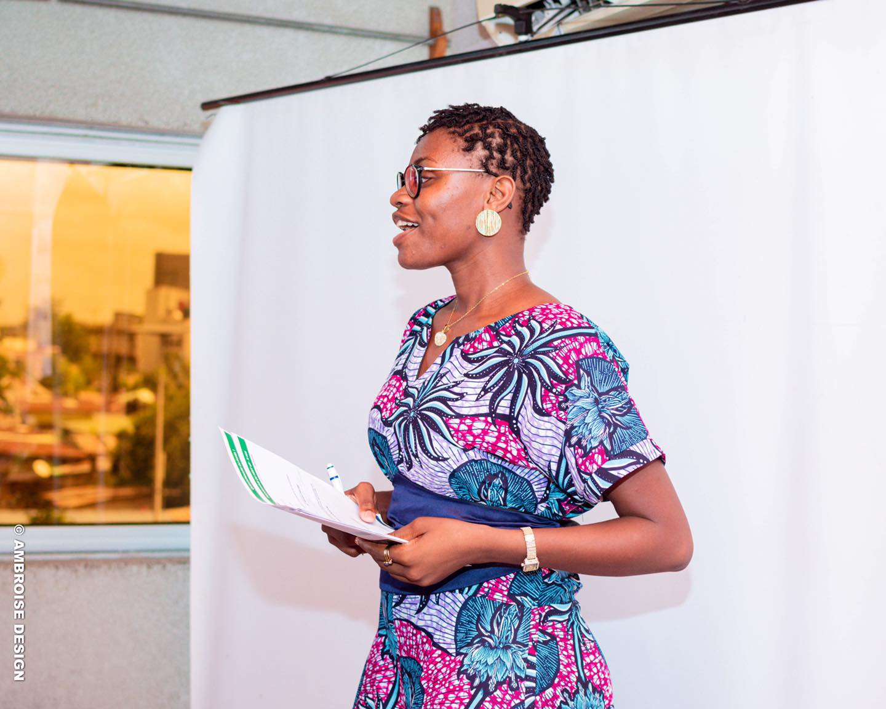
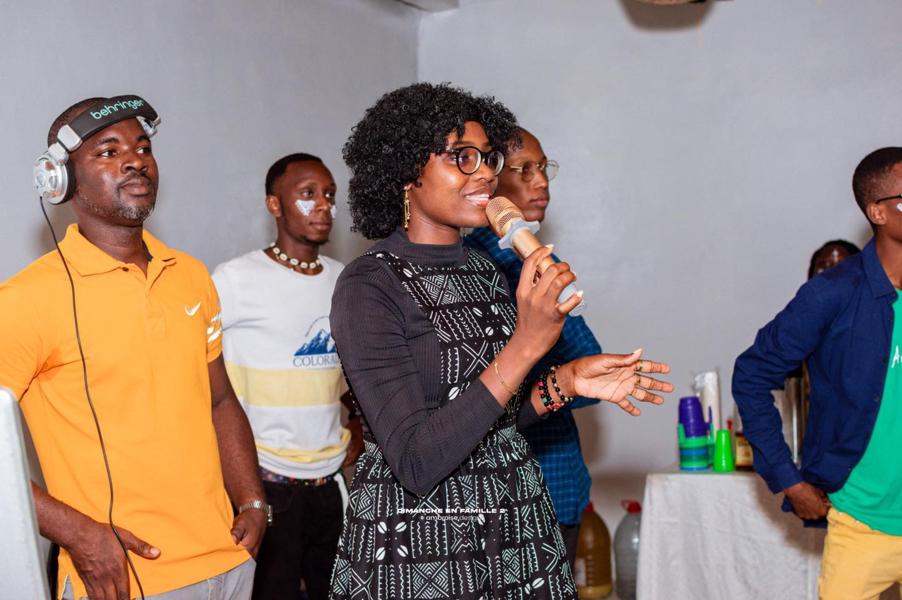

Followers Instagram
@_synnova, une audience engagee autour des prises de parole et de l'univers de Synnova.
Engagement
Je crois en une communication qui rassemble, valorise, eduque et laisse une empreinte positive.
J'aime les projets qui creent du lien, donnent de la place a la jeunesse et elevent les initiatives utiles.


Communaute
Au-dela des volumes, l'important reste la qualite du lien : une communaute qui suit, reagit et partage.
@_synnova, une audience engagee autour des prises de parole et de l'univers de Synnova.
Un parcours actif dans la communication, la coordination et l'engagement citoyen au Benin.
Mairie des Jeunes, U-Report, Femmes Capables et UCAE Officiel, dans des cadres complementaires.
Une meme conviction : la communication peut rapprocher, eclairer et faire avancer.
Valeurs
Authenticite, proximite, utilite sociale et impact positif ne sont pas des mots de facade. Ce sont les criteres qui guident les choix de projets et la maniere de les incarner.
Si un projet a du sens et qu'il a besoin d'une energie claire pour toucher les gens, la conversation vaut la peine d'etre ouverte.
Action
Les points de contact publics les plus actifs restent Instagram, Facebook et l'email direct.